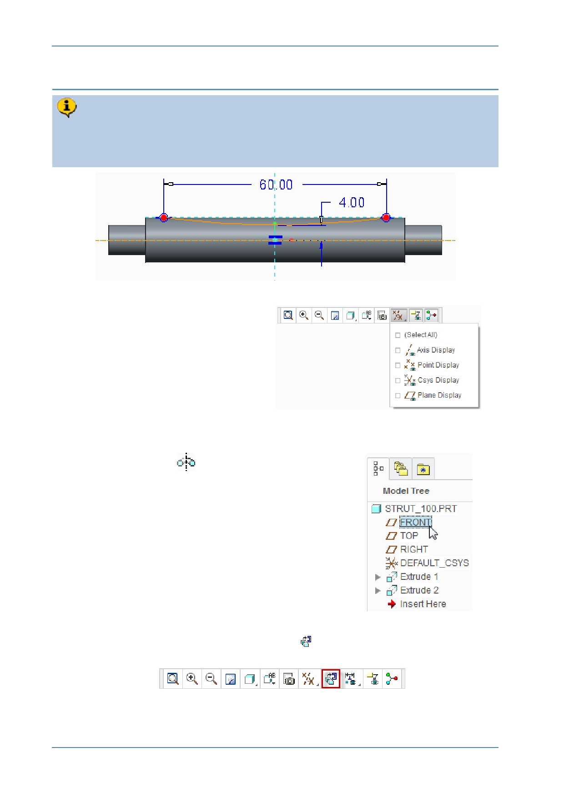

PTC Academic Program
Step 6: Revolve a sketched arc to thin the center of the strut
You will use a Revolve feature with an arc sketch drawn on the FRONT datum
plane to remove material around the center of the strut. This will make the strut
lighter and reduce the amount of material being used.
1. If necessary, disable the display of
all datum features.
2. Starting a Revolve (sketch based) feature and defining the sketch plane:
Start the Revolve
tool from the Shapes
group. Notice the Revolve dashboard and the
revolve options.
In the model tree, click to select datum plane
FRONT as the sketch plane.
In the Graphics toolbar, click Sketch View
to reorient the sketch plane parallel
to the screen.
The model space will rotate until the sketch plane is parallel to the computer screen.
© 2012 PTC
Creo Parametric 2.0 Primer
Page 54